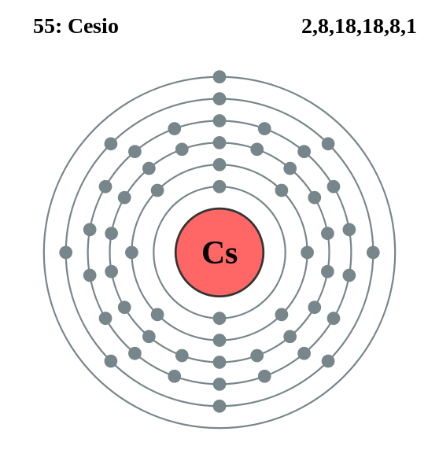

|
|
||
|
CESIO El cesio es un metal alcalino descubierto mediante espectroscopia en 1860. Se encuentra en la lepidolita, la polucita y en otras fuentes. El cesio es de color blanco plateado, blando y dúctil, y es el elemento más alcalino y electropositivo. El cesio es uno de los tres metales que son líquidos a temperatura ambiente. Reacciona de manera explosiva con el agua fría y con el hielo cuando las temperaturas son superiores a –116 °C. El espectro del metal contiene dos líneas azules brillantes y varias líneas en las longitudes de onda roja, amarilla y verde. El cesio se utiliza en tubos electrónicos y células fotoeléctricas como un catalizador de la hidrogenación para compuestos orgánicos específicos y en relojes atómicos. |
 |
DATOS Número Atómico: 55 Peso Atómico: 132.9 Electronegatividad: 0.79 Configuración Electrónica: 6s1 Estados de Oxidación: +1 No. de Electrones de Valencia: 1 |